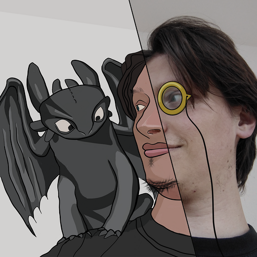
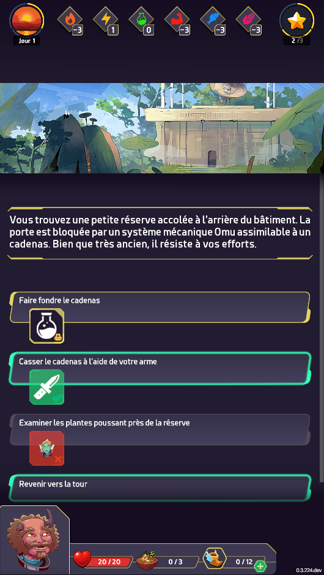
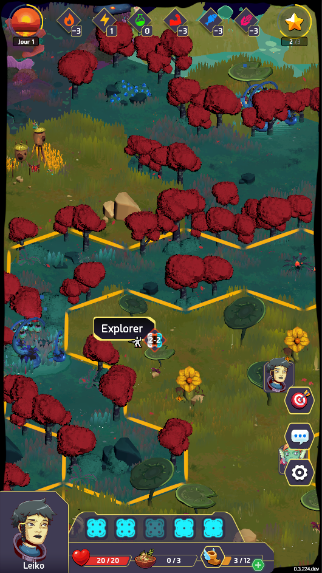
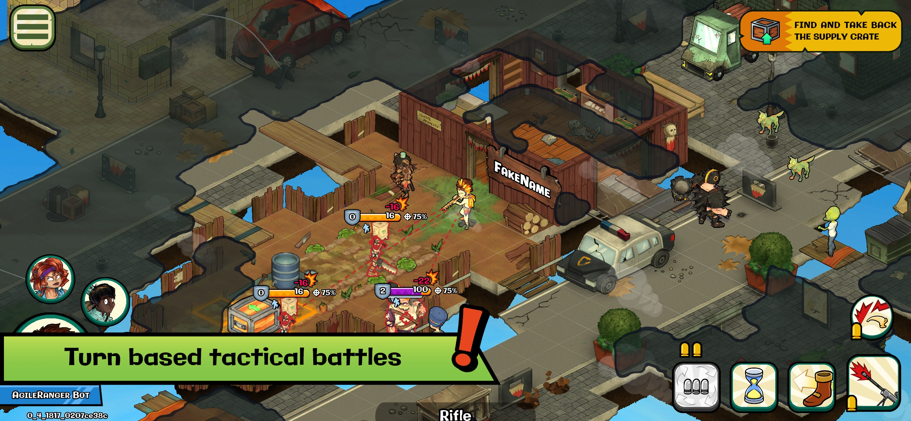
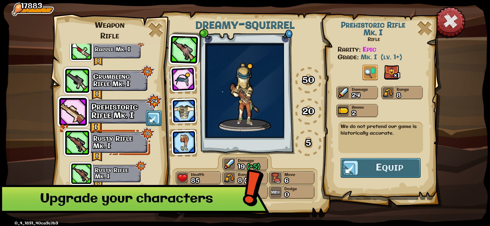
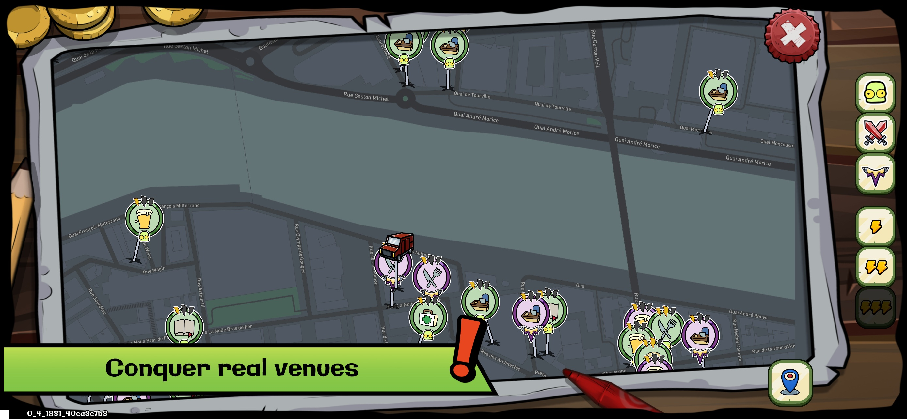
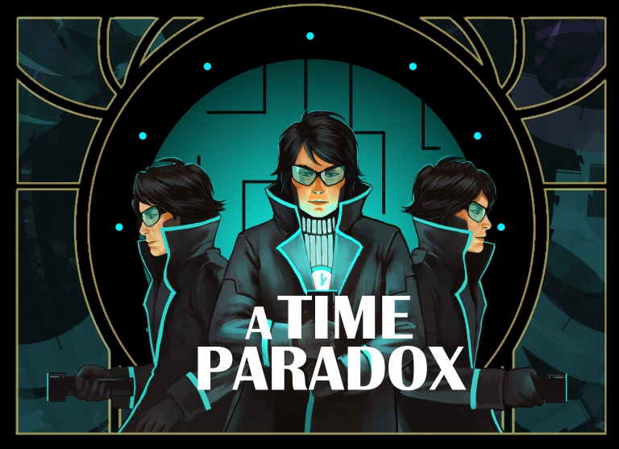
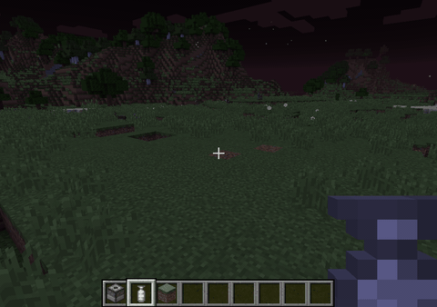

UI réactive dans Unity
Pourquoi et comment brancher sa UI sur un state observable ?Samuel BOUCHET
Développeur Unity chez Lonestone

Le plan
- Jeu et enjeux techniques
- Inspirations
- Implémentation
- Intérêts et limites
Jeu et enjeux
StarTeam

- Jeu d'aventure coopératif asynchrone
- 3 à 5 joueurs doivent remplir leur objectif en un nombre de jours limité
StarTeam
Les joueurs explorent une carte et actionnent des points d'intérêts pour
déclencher des aventures


En développement: images non
représentatives de la qualité finale
StarTeam
Jeu multijoueur en réseau
Contraintes
- Clients et serveur capables de jouer les actions.
- Serveur C# (réseau et bdd)
- Client C# (rendu)
- Bibliothèque partagée C# (logique gameplay)
- Tours longs simultanés
- Beaucoup de UI, un peu de 3D
- Petite équipe (2 devs + 1 art + 1 gd + intervenants)
On s'inspire et on garde
De ReactJS: une organisation en composants autonomes
public class MoralDisplay : ConnectedMonoBehaviour {
public Slider Slider;
public TextMeshProUGUI Text;
// On regroupe vue et comportements
protected override void OnSetup(State state) {
Slider.maxValue = MoralInitialValue;
Subscribe(state.Game.Moral, moral => {
Slider.value = moral;
Text.text = $"{moral}<#767676>/{Slider.maxValue}";
});
OnClick(Slider, () => {
OkModal.Open("Si le moral tombe à 0, vous perdez la partie.");
}, TimeSpan.Zero);
}
}
De Redux: Centralisation de l'état applicatif
- Minimal mais suffisant
- Pas de données redondantes ou calculées
- Utilisation sélecteurs réactifs pour accéder aux données calculées ou composées
- Solution pour rendre possible l'autonomie des composants
De Redux: Le composant s'abonne aux fragments de données dont il a besoin
// Composant DiceDisplay
protected override void OnSetup(State state) {
var diceState = state.Game.Character[this.CharacterId].Dice[this.DiceIndex];
var selectedDiceState = state.Local.SelectedDice;
Subscribe(diceState.Used, diceState.Color, (used, color) => {
Face.color = Configurator.GetColor(color).WithAlpha(used ? DisabledOpacity : 1f);
});
Subscribe(diceState.Value, value => {
Face.sprite = Configurator.DB.DiceFaces[Mathf.Clamp(value - 1, 0, 5)];
});
Subscribe(selectedDiceState, selectedDice => {
var isSelected = selectedDice.HasValue && selectedDice.Value.DiceIndex == diceIdx;
if (isSelected) {
breathAnim.Play();
} else {
breathAnim.ResetAndStop();
}
});
}
De Flux et Redux: la circulation des données en sens unique
Implémentation
Comment construire un state et des sélecteurs observables ?
Réactivité : type réactif
// Implémentation basée sur AsyncReactiveProperty de UniTask
// (https://github.com/Cysharp/UniTask)
var reactiveProperty = new Reactive<int>(99);
var cancellationSource = new CancellationTokenSource();
reactiveProperty.ForEachAsync(x => { // Démarre la subscription grace à LINQ
Debug.Log(x); // Réagit à chaque changement de valeur
}, cancellationSource.Token); // Arrête la subscription grace à un token
property.Value = 90; // log 90
property.Value = 89; // log 89
cancellationSource.Cancel();
property.Value = 77; // aucun log
Réactivité : état réactif simple
public class CharacterState {
public readonly Reactive<byte> Health;
public CharacterState(Reactive<byte> health) {
Health = new(health);
}
public void UpdateValue(CharacterState nextValue) {
Health.Value = next.Health;
}
}
Réactivité : état réactif composé
public class GameState {
public readonly Reactive<byte> Moral;
public readonly Dictionary<CharacterId, CharacterState> Characters;
public GameState(Reactive<byte> moral, Dictionary<CharacterId, CharacterState> characters) {
Moral = new(moral);
Characters = new();
// UpdateDictionary(modifyMe, targetValue, howToUpdate)
UpdateDictionary(Characters, characters, (curr, next) => curr.UpdateValue(next));
}
public void UpdateValue(GameState nextValue) {
Moral.Value = nextValue.Moral.Value;
UpdateDictionary(Characters, characters, (curr, next) => curr.UpdateValue(next));
}
}
Outils de lecture du state
- Les accesseurs pour faciliter l'utilisation et découpler l'utilisation du state de sa forme
- Des sélecteurs pour mettre en cache des données calculées et les exposer réactivement
- Un composant surchargeable qui fournit les accès au contexte de l'application (ConnectedMonoBehaviour)
Accesseurs
faciliter l'utilisation et découpler l'utilisation du state de sa forme
// Get region state
public static RegionState GetRegion(this GameState gameState, int regionIndex) {
return gameState.Regions[regionIndex];
}
// Check if an item is in the designated character's inventory.
public static bool CharactersHaveItem(this GameState gameState, CharacterId c, ItemId i) {
foreach (var inventorySlot in gameState.Characters[c].Inventory.Slots) {
if (inventorySlot.Item.Value == i && inventorySlot.Quantity.Value > 0) return true;
}
return false;
}
Sélecteurs
Mettre en cache des données calculées et les exposer réactivement
var canMoveToRegionSelector = new Reactive<bool>();
// CombineLatest est un outil de Unitask pour aggréger des sources réactives
CombineLatest(state.Local.SelectedRegion, state.Game.IsTurnOver).ForEachAsync(
// Met à jour canMoveToRegionSelectors à chaque fois que la valeur de
// SelectedRegion ou IsTurnOver est modifié
(region, turnOver) => canMoveToRegionSelectors.Value = region != null && !turnOver,
cancelSelectorsToken
);
Comment construire un composant réactif ?
ConnectedMonoBehaviour
Un composant surchargeable qui donne accès au contexte.
public abstract class ConnectedMonoBehaviour : MonoBehaviour {
// En fin de vie on annulera le token pour débrancher toutes ses subscriptions
internal CancellationTokenSource? _resetSource;
protected CancellationToken ResetToken => _resetSource.Token;
// Expose automatiquement une instance qui contient le State de l'application
protected GameManager GameManager;
// Ici le composant pourra se brancher au state et événements
protected abstract void OnSetup(State state);
protected virtual void OnEnable() {
if (!_isSetup) {
_isSetup = true;
_resetSource?.Cancel(false);
_resetSource = new CancellationTokenSource();
OnSetup(GameManager.State);
}
}
public virtual void Dispose() {
_resetSource?.Cancel(false);
_isSetup = false;
}
protected virtual void OnDestroy() {
Dispose();
}
}
ConnectedMonoBehaviour à l'œuvre
public class MoralDisplay : ConnectedMonoBehaviour {
public Slider Slider;
public TextMeshProUGUI Text;
// On regroupe vue et comportements
protected override void OnSetup(State state) {
Slider.maxValue = MoralInitialValue;
Subscribe(state.Game.Moral, moral => {
Slider.value = moral;
Text.text = $"{moral}<#767676>/{Slider.maxValue}";
});
OnClick(Slider, () => {
OkModal.Open("Si le moral tombe à 0, vous perdez la partie.");
}, TimeSpan.Zero);
}
}
ConnectedMonoBehaviour à l'œuvre
// Composant DiceDisplay
protected override void OnSetup(State state) {
var diceState = state.GetDice(this.CharacterId, transform.GetSiblingIndex());
var selectedDiceState = state.Local.SelectedDice;
Subscribe(diceState.Used, diceState.Color, (used, color) => {
Face.color = Configurator.GetColor(color).WithAlpha(used ? DisabledOpacity : 1f);
});
Subscribe(diceState.Value, value => {
Face.sprite = Configurator.DB.DiceFaces[Mathf.Clamp(value - 1, 0, 5)];
});
Subscribe(selectedDiceState, selectedDice => {
var isSelected = selectedDice.HasValue && selectedDice.Value.DiceIndex == diceIdx;
if (isSelected) {
breathAnim.Play();
} else {
breathAnim.ResetAndStop();
}
});
}
Intérêts et limites
Limite 1 : Lourdeur et rigueur
- Le state devra suivre une structure cohérente et respecter l'intégrité des références
- Soit en contrôlant avec le l'outillage
- Soit en faisant preuve de rigueur (code reviews et bonne compréhension des mécaniques par tous les membres de l'équipe)
- Les changements de states doivent être spécifiés et normalisés via des actions
Limite 2 : Animations et transitions
- Les états n'indiquent que la situation finale
- Chaque composant est autonome pour passer de son état actuel vers son état cible, ce qui rend l'orchestration difficile.
Limite 3 : peu utile si pas de cache
- Les composants qui se mettent à jour chaque update pourront lire la valeur depuis le state mais bénéficient peu de la réactivité.
- Utile pour la UI et les invalidation de cache
- Peu utile pour les objets 3D ou 2D de la scène branché sur la boucle update
Raison 1 : Performances
- Invalider le cache de manière précise pour ne recalculer que le nécessaire
Raison 2 : Cohérence d'affichage
- En privilégiant une mécanique déclarative plutôt qu'événementielle, on limite les erreurs d'affichage
Raison 3 : Injection d'état
- Phase de dev:
- mettre le jeu dans l'état où la fonctionnalité est testable
- Phase de debug:
- attacher une image de l'état du jeu lors d'une remontée de bug
- mettre le jeu dans l'état où le bug est reproductible
- Phase de runtime:
- initialiser une sauvegarde de n'importe quel état
Raison 4 : Maîtrise de la complexité
- En ayant des composants autonomes, on cloisonne la complexité.
Résumé
- Circulation des données en sens unique + état applicatif centralisé pour découpler rendu et gameplay
- Rendre le state observable pour y brancher des composants autonomes et réactifs
Samuel BOUCHET
Développeur Unity chez Lonestone
City Invaders
  
Mod minecraft - Capsule
